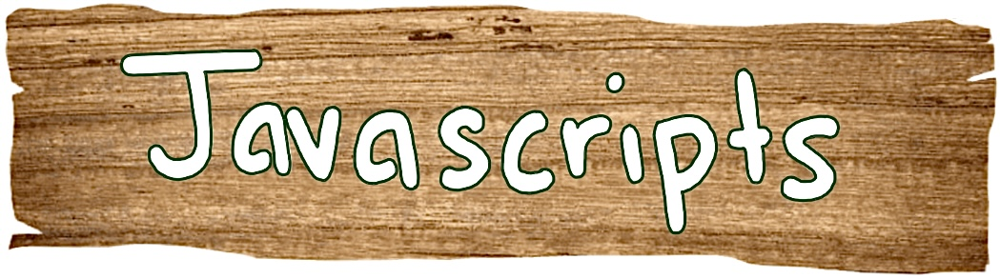

|

|
 |
Welcome to Nadia's Programming Portfolio!
My name is Nadia Dias, and I am a freshman at the University of Rhode Island! I am majoring in computer science and plan on going through the accelerated bachelors to masters program they offer here, so I can get my masters in computer science! This website will showcase all the skills I have learned while taking the CSC106 class at URI! The website was completely constructed by myself using HTML and CSS properties.
Dont be afraid to stick around and explore the webpage! Take a look at the about me and javascript pages :]